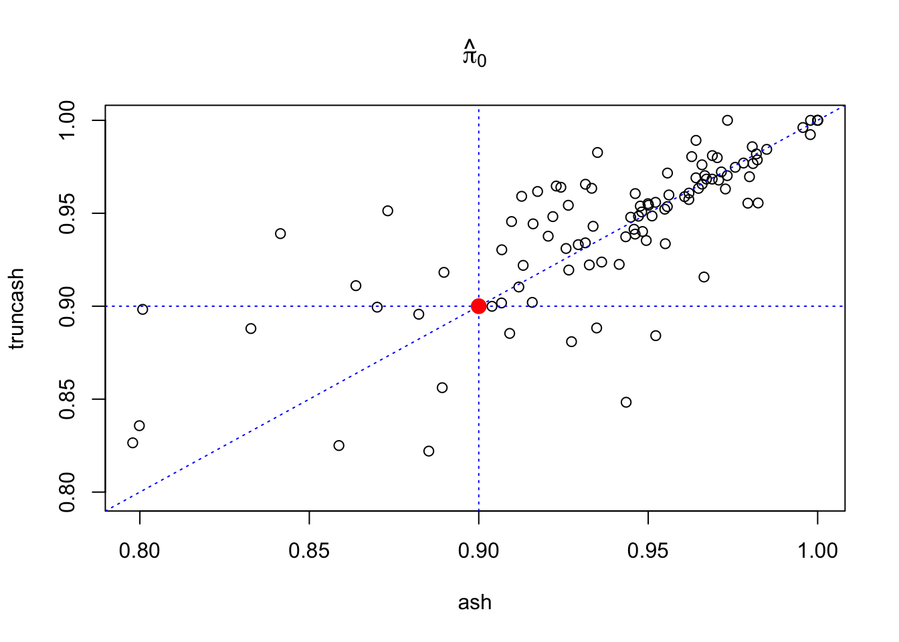
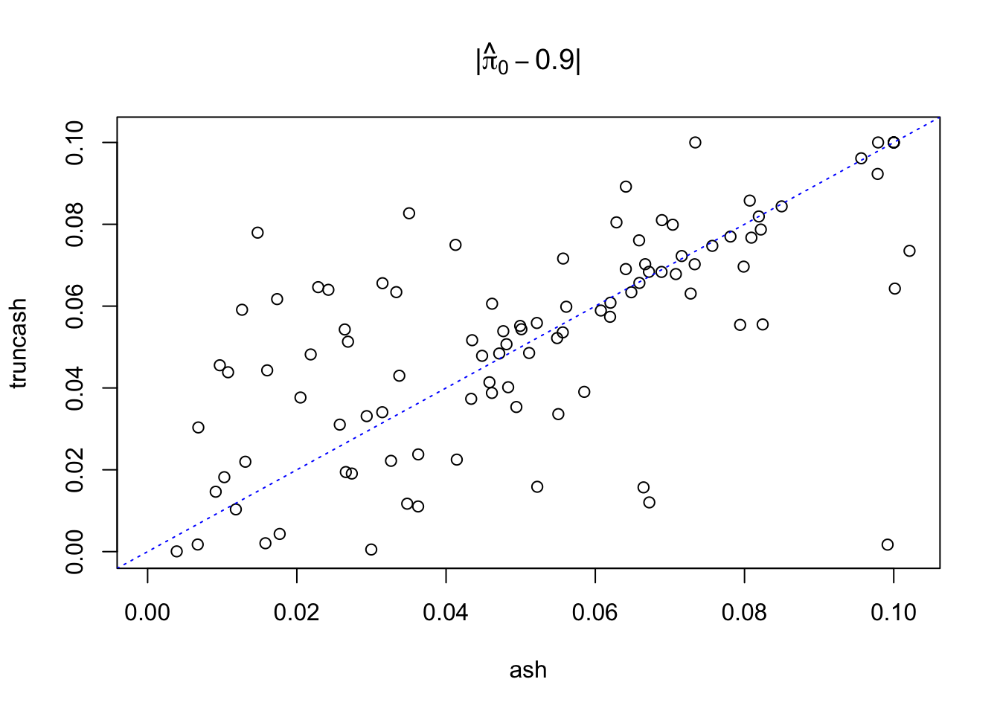
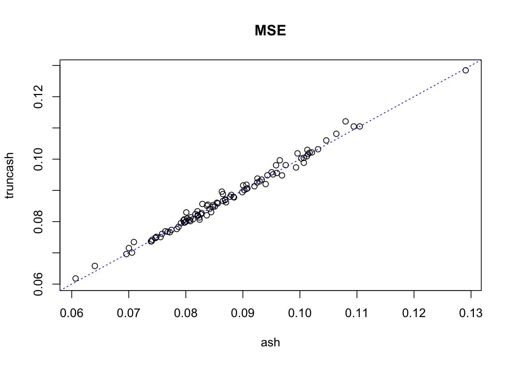

Last updated: 2017-12-21
Code version: 6e42447
Suppose we have \(m + n\) observations of \((\hat\beta_j, \hat s_j)\) in two groups such that, with a pre-specified \(t\).
\[ \text{Group 1: }(\hat\beta_1, \hat s_1), \ldots, (\hat\beta_m, \hat s_m), \text{with } |\hat\beta_j/\hat s_j| \leq t \]
\[ \text{Group 2: }(\hat\beta_{m+1}, \hat s_{m+1}), \ldots, (\hat\beta_{m+n}, \hat s_{m+n}), \text{with } |\hat\beta_j/\hat s_j| > t \]
For Group 1, we’ll only use the information that for each one, \(|\hat\beta_j/\hat s_j| \leq t\); that is, they are moderate observations. For Group 2, we’ll use the full observation \((\hat\beta_j, \hat s_j)\).
Now we have usual ASH assumptions that for both groups,
\[ \begin{array}{c} \hat\beta_j | \hat s_j, \beta_j \sim N(\beta_j, \hat s_j^2)\\ \beta_j \sim \sum_k\pi_k N(0, \sigma_k^2) \end{array} \]
Now the estimate of \(\pi_k\) from the marginal probability of the data in both groups is
\[ \max_{\{\pi_k\}}\sum\limits_{j=1}^m\log(\sum_k\pi_k(2\Phi(\frac{t\hat s_j}{\sqrt{\sigma_k^2+\hat s_j^2}}) - 1)) + \sum\limits_{l=1}^{n}\log(\sum_k\pi_k N(\hat\beta_{m + l}; 0, \sigma_k^2 + \hat s_{m + l}^2)) \]
where \(\Phi(\cdot)\) is the cdf of \(N(0, 1)\), and \(N(\cdot; 0, \sigma_k^2 + \hat s_{m + l}^2)\) is the pdf of \(N(0, \sigma_k^2+\hat s_j^2)\).
Note that
The second part of the objective function is the standard objective function for the regular ASH. The first part of the objective function is new, but it would be as if we are using a different likelihood, so it wouldn’t make any difference numerically.
The first part of the objective,
\[ \max_{\{\pi_k\}}\sum\limits_{j=1}^m\log(\sum_k\pi_k(2\Phi(\frac{t\hat s_j}{\sqrt{\sigma_k^2+\hat s_j^2}}) - 1)) \]
and its special case, when we set \(\hat s_j \equiv 1\),
\[ m\log(\sum_k\pi_k(2\Phi(\frac{t}{\sqrt{\sigma_k^2+1}}) - 1)) \]
will move more weight to \(\hat\pi_1\). Customarily, we assume \(\sigma_1 \leq \cdots \leq \sigma_K\), so to maximize this first part alone will be essentially to maximize \(\hat\pi_1\). In other words, if we only have Group 1 and no “extreme” observations in Group 2, the estimated prior of \(\beta\) will be a point mass at \(0\). This is true no matter whether we are using \(z\)-scores (thus making \(\hat s_j \equiv 1\) effectively) or not, although using \(z\)-scores will make the case more obviously.
Here is the main truncash function, utilizing autoselect.mixsd, mixIP, normalmix from ashr.
\(1000\) pairs of \((\hat\beta, \hat s \equiv 1)\) are simulated, so that \(900\) of them come from \(N(0, 1)\) and another 100 from \(N(\beta, 1)\) with \(\beta \sim N(0, 1)\). The \(1000\) pairs of observations are fed to both ash and truncash; \(\hat\pi_0\) and MSE are obtained. Results from 100 runs are plotted below.
source("../code/truncash.R")
set.seed(777)
sebetahat = rep(1, 1000)
t = qnorm(0.975)
pihat0_ash = pihat0_truncash = mse_ash = mse_truncash = mse_mle = lfsr0.05_ash = lfsr0.05_truncash = c()
for (i in 1:100) {
beta1 = rep(0, 900)
betahat1 = rnorm(length(beta1), beta1, 1)
beta2 = rnorm(100, 0, 1)
betahat2 = rnorm(length(beta2), beta2, 1)
beta = c(beta1, beta2)
betahat = c(betahat1, betahat2)
res.ash = ash(betahat, 1, mixcompdist = "normal", method = "fdr")
res.truncash = truncash(betahat, sebetahat, t)
pihat0_ash[i] = get_fitted_g(res.ash)$pi[1]
pihat0_truncash[i] = get_fitted_g(res.truncash)$pi[1]
mse_ash[i] = mean((get_pm(res.ash) - beta)^2)
mse_truncash[i] = mean((get_pm(res.truncash) - beta)^2)
mse_mle[i] = mean((betahat - beta)^2)
lfsr0.05_ash = mean(get_lfsr(res.ash) <= 0.05)
lfsr0.05_truncash = mean(get_lfsr(res.truncash) <= 0.05)
}
plot(pihat0_ash, pihat0_truncash, xlab = "ash", ylab = "truncash", main = expression(hat(pi)[0]),
xlim = c(min(c(pihat0_ash, pihat0_truncash)), max(c(pihat0_ash, pihat0_truncash))),
ylim = c(min(c(pihat0_ash, pihat0_truncash)), max(c(pihat0_ash, pihat0_truncash)))
)
abline(0, 1, lty = 3, col = "blue")
abline(v = 0.9, lty = 3, col = "blue")
abline(h = 0.9, lty = 3, col = "blue")
points(0.9, 0.9, col = "red", cex = 1.5, pch = 19)
plot(abs(pihat0_ash - 0.9), abs(pihat0_truncash - 0.9), xlab = "ash", ylab = "truncash",
main = expression(paste("|", hat(pi)[0] - 0.9, "|")),
xlim = c(0, max(c(abs(pihat0_ash - 0.9), abs(pihat0_truncash - 0.9)))),
ylim = c(0, max(c(abs(pihat0_ash - 0.9), abs(pihat0_truncash - 0.9))))
)
abline(0, 1, lty = 3, col = "blue")
points(0.9, 0.9, col = "red", cex = 1.5, pch = 19)
plot(mse_ash, mse_truncash, xlab = "ash", ylab = "truncash", main = "MSE",
xlim = c(min(c(mse_ash, mse_truncash)), max(c(mse_ash, mse_truncash))),
ylim = c(min(c(mse_ash, mse_truncash)), max(c(mse_ash, mse_truncash)))
)
abline(0, 1, lty = 3, col = "blue")
sessionInfo()R version 3.4.3 (2017-11-30)
Platform: x86_64-apple-darwin15.6.0 (64-bit)
Running under: macOS High Sierra 10.13.2
Matrix products: default
BLAS: /Library/Frameworks/R.framework/Versions/3.4/Resources/lib/libRblas.0.dylib
LAPACK: /Library/Frameworks/R.framework/Versions/3.4/Resources/lib/libRlapack.dylib
locale:
[1] en_US.UTF-8/en_US.UTF-8/en_US.UTF-8/C/en_US.UTF-8/en_US.UTF-8
attached base packages:
[1] stats graphics grDevices utils datasets methods base
other attached packages:
[1] SQUAREM_2017.10-1 ashr_2.2-2
loaded via a namespace (and not attached):
[1] Rcpp_0.12.14 knitr_1.17 magrittr_1.5
[4] workflowr_0.8.0 REBayes_1.2 MASS_7.3-47
[7] doParallel_1.0.11 pscl_1.5.2 lattice_0.20-35
[10] foreach_1.4.4 stringr_1.2.0 tools_3.4.3
[13] parallel_3.4.3 grid_3.4.3 git2r_0.20.0
[16] htmltools_0.3.6 iterators_1.0.9 assertthat_0.2.0
[19] yaml_2.1.16 rprojroot_1.3-1 digest_0.6.13
[22] Matrix_1.2-12 codetools_0.2-15 evaluate_0.10.1
[25] rmarkdown_1.8 stringi_1.1.6 compiler_3.4.3
[28] Rmosek_8.0.69 backports_1.1.2 truncnorm_1.0-7 This R Markdown site was created with workflowr